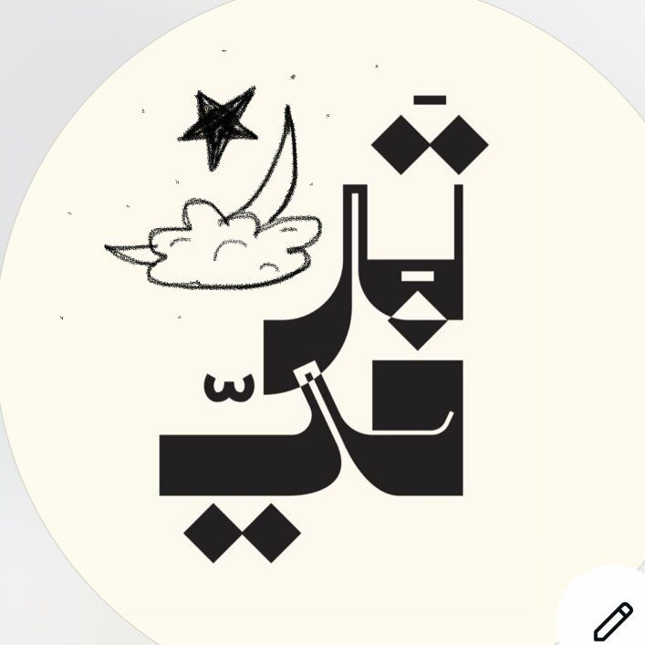
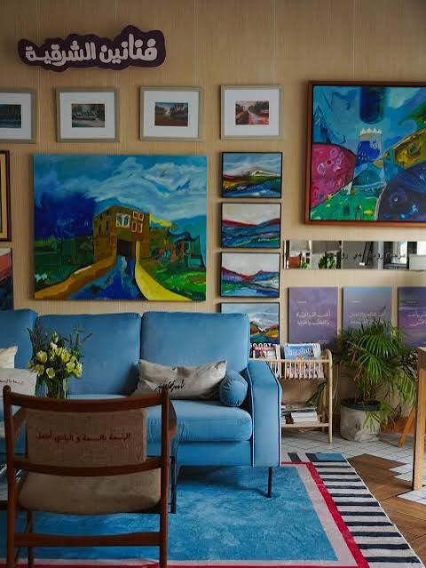
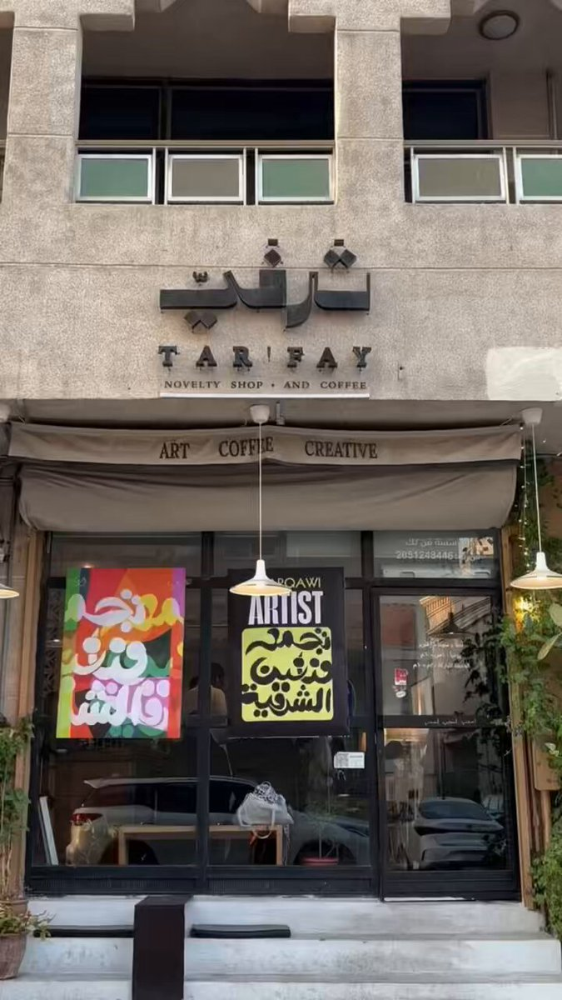
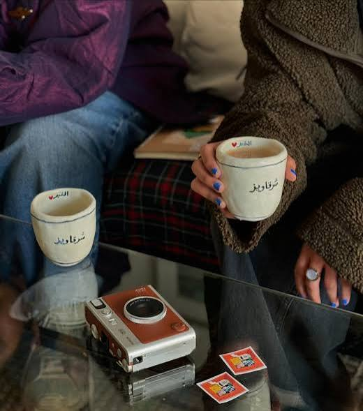
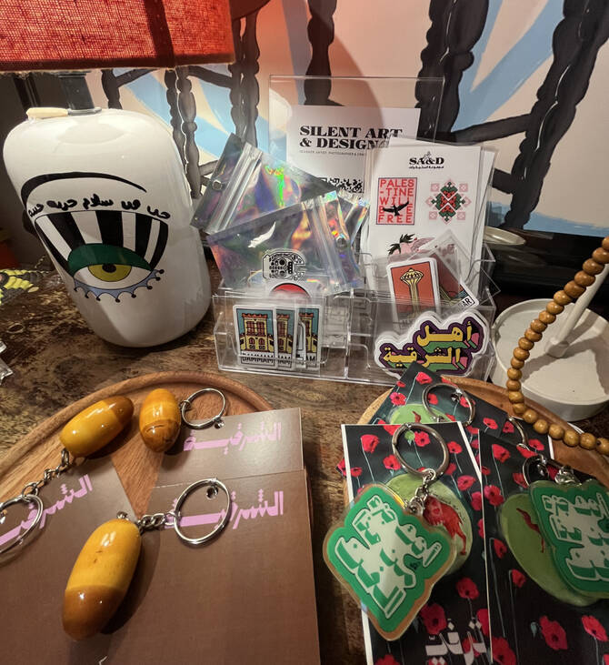
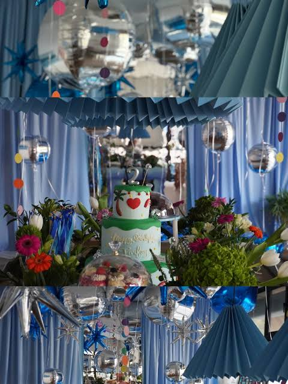

Introduction
A cafe and art gallery designed to feel cinematic, calm, and close-knit.
The opening impression stays light and atmospheric, with motion in the background so the mood feels alive without overpowering the page.

Tarfay Coffee & Art HousePrince Nasser St, Al Khobar Al Shamalia
Tarfay is a cozy Al Khobar destination where specialty coffee, gallery walls, and thoughtful gatherings come together in a soft, welcoming atmosphere.


Intimate in scale, rich in atmosphere, and ready for thoughtful events.
Founder & CEO
Tarfay was shaped as more than a cafe. It was imagined as a cultural room in Al Khobar, where coffee, local creativity, and hospitality could feel beautifully connected.
About Tarfay
The experience is built around three layers: specialty coffee, curated visual culture, and intimate gatherings that feel personal from the first minute.

Coffee first
Drinks and bites are part of the emotional experience, not just the menu.
Gallery layer
Paintings, collectible details, and tactile styling make the room feel like a small exhibition.
Event mood
Tarfay is not a large venue, which makes launches, artist evenings, and private meetups feel warm and memorable.
Cafe + Gallery
Tarfay blends the intimacy of a neighborhood coffee bar with the curation of a small gallery. It invites guests to notice paintings, objects, textures, and people as part of one experience.
Highlight local artists, small collections, and changing visual stories.
Seating is arranged to feel personal, artistic, and easy to return to.
Coffee service and visual identity work together instead of feeling separate.

Real Moments
These cards use your local photos and videos so the website feels grounded in the real space, while still pointing people to Instagram and Google Maps.

Events & Gatherings
That smaller scale is part of the charm. Artist talks, launch evenings, Ramadan tables, and private gatherings can feel warm, elegant, and genuinely personal here.
Creative gatherings, small celebrations, artist moments, and curated seasonal experiences.
Decor, flowers, table styling, and artwork can transform the room without losing its intimacy.
People feel hosted, close to the details, and connected to the purpose of the event.
Visit Tarfay
Find us on Prince Nasser Street in Al Khobar Al Shamalia for coffee, conversation, art, and a gallery-inspired pause from the rush.
Prince Nasser St, Al Khobar Al Shamalia, Al Khobar 34427